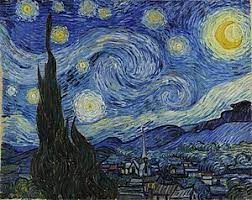

Ciao a tutti, sono Flavia, ho 32 anni è sono qui per ricrearmi.
Da quando ho 18 anni ho sempre lavorato dentro uno studio notarile come
segretaria amministrativa, ora trovandomi in una situazione di stallo, ho
deciso di ricominciare da zero e reinventarmi.
Sono la mamma di uno splendido bambino di 9 anni, che ha una profonda
stima di me, ed è giusto che io gli insegni che non è mai troppo tardi nella vita per raggiungere i propri
obbiettivi.
-
- Leggere:
- Amo leggere i romanzi rosa e i crime
-
- Gaming:
- LOL, VALORANT, DAYZ... E chi più ne ha più ne metta.
-
- Film:
- Horror, fantasy, thriller... ADORO!
la notte stellata di Vincent Van Gogh

Penso che la notte sia immensamente più colorata del giorno.. (V.V.Gogh)